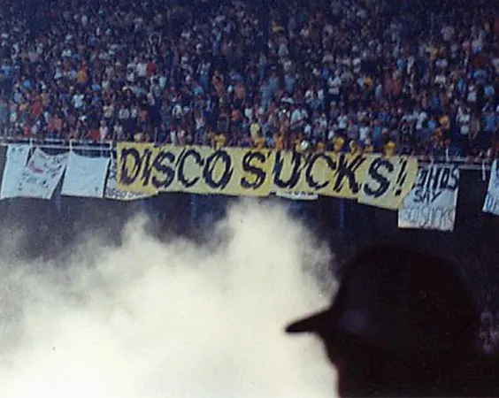
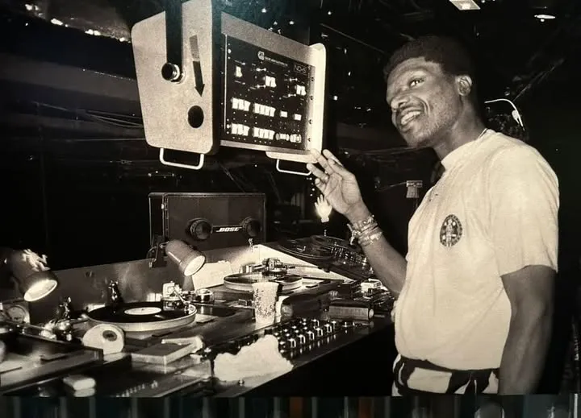

El Garage es el verdadero sucesor del Disco, sin mucha desviación en forma, contenido o estilo.
Disco era el término usado por el público del rock fraternal blanco para referirse a toda música gay y negra los cuales estaban angustiados porque a finales de los 70, la música disco estaba en todas partes, era popular, y no había ni una sola emisora de radio que no lo pusiera.

Toda esta animosidad culminó en la infame Noche de Demolición de Disco en el Comisky Park de Chicago en julio de 1979. Fue más que un grupo de aficionados a la música descontentos que se revelaban contra una moda sobresaturada. Fue una guerra cultural. Esa noche, destruyeron más que solo discos de disco. Muchos discos selectos de soul, gospel, R&B, Quiet Storm, jazz, pop, funk, e incluso de Motown y Beach Boys, encontraron su destino en esa pira. Si el house y el techno hubieran existido, probablemente también los habrían destruido. El disco era todo lo que no fuera rock de mierda y, por lo tanto, merecía morir. La promoción ofrecía entradas a 99 centavos para aquellos que trajeran un disco de vinilo de música disco. El evento se convirtió en un disturbio debido a la gran cantidad de personas que asistieron y a la quema de los discos, lo que provocó una invasión al campo por parte de los espectadores.
Este evento es conocido como "La Noche en que Murió la Disco" y se considera un punto crucial en el declive de la popularidad de la música disco.
Así que Disco dejó de ser Disco. Empezó a ser Garage.

La palabra Garage no tiene ningún significado relevante, salvo que su nombre proviene del legendario club nocturno Paradise Garage de Nueva York, donde el DJ Larry Levan pinchaba lo que le daba la gana. La música Garage simplemente significaba la música que Larry tocaba; la que se escuchaba en su club. Tocaba Disco, por supuesto, pero una versión simplificada, sin las cuerdas sentimentales ni las fanfarrias de viento.
Empleando nueva instrumentación electrónica A veces, un teclado y un bajo eran el único acompañamiento, junto con una voz sensual para guiar el ritmo. Garage es Disco con Soul.
El sonido Garage de Nueva York suele contrastarse con el Chicago House . Es pura coincidencia que ambos lleven el nombre de viviendas residenciales.
El garage no adquirió oficialmente su estereotipo de sonido "garage" hasta los 90. Hasta entonces, técnicamente, seguía siendo un sonido derivado de la música disco. A principios de los 90, adoptó un shuffle distintivo que desde entonces se ha convertido en el patrón rítmico habitual de casi toda la música garage. Así que, si alguna vez intentas distinguir entre garage y house, simplemente escucha ese shuffle.
A diferencia del Chicago House, el New York Garage casi nunca es instrumental. Le encantan las divas, los ligeros toques de teclado y, por supuesto, el shuffle. Es el jazz suave de la música dance, inofensivo y familiar.
Existe una escena llamada UK Garage que, a pesar de su nombre, tiene muy poco que ver con el Garage propiamente dicho. Se puede oír el shuffle en Speed Garage y 2-Step, pero los demás derivados son tan ajenos que resulta casi ofensivo llamarlos Garage. Hoy en día, lo que la mayoría de la gente cree que es música house es, en realidad, garage. Y lo que la mayoría de la gente cree que es garage es UK Garage.